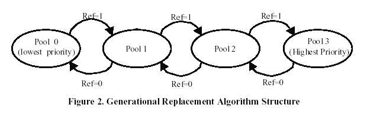

Home Page
F.A.Qs
Statistical Charts
Past Contests
Scheduled Contests
Award Contest
| Online Judge | Problem Set | Authors | Online Contests | User | ||||||
|---|---|---|---|---|---|---|---|---|---|---|
| Web Board Home Page F.A.Qs Statistical Charts | Current Contest Past Contests Scheduled Contests Award Contest | |||||||||
|
Language: Generational Replacement
Description Erik G. Hallnor and Steven K. Reinhardt from the University of Michigan suggested a fully associative software-managed cache design in ISCA (International Symposium on Computer Architecture) 2000. They have two primary contributions: a practical design for a fully associative memory structure, the indirect index cache (IIC), and a novel replacement algorithm, generational replacement, that is specifically designed to work with the IIC. They analyze the behavior of an IIC with generational replacement as a drop-in, transparent substitute for a conventional secondary cache, and achieve miss rate reductions from 8% to 85% relative to a 4-way associative LRU organization, matching or beating a (practically infeasible) fully associative true LRU cache. Incorporating these miss rates into a rudimentary timing model indicates that the IIC/generational replacement cache could be competitive with a conventional cache at today's DRAM latencies, and will outperform a conventional cache as these CPU-relative latencies grow.
The indirect index cache (IIC) provides a practical implementation of a fully associative data store using indirection, mapping physical addresses to data array indices in a manner similar to page-table based virtual-to-physical address translation. Unlike virtual address translation, the IIC is transparent to the operating system. Also unlike virtual memory, the IIC initiates miss handling in hardware, keeping software off the critical path of main-memory accesses. The generational replacement algorithm, as we focus here, is described in the paper as following: "Although the IIC design is independent of the replacement algorithm used to manage it, its utility depends on the existence of a practical algorithm that provides competitive performance without unreasonable overhead. This section presents a novel algorithm we have developed, called generational replacement ...... As described above, the motivation for generational replacement is to cope with the reduced information provided by secondary-cache reference bits. Specifically, under generational replacement a block that happens not to have its reference bit set during a particular interval is not considered a candidate for replacement if it has been repeatedly referenced in the recent past. Unfortunately, maintaining even approximate reference frequency counters based on reference bits is time consuming. Instead, we group blocks into a small number of prioritized pools. We promote blocks that are referenced regularly into higher-priority pools, and demote unreferenced blocks into lower-priority pools. On a miss, the block to be replaced is chosen from the lowest-priority nonempty pool. We call the algorithm "generational replacement" based on the notion that frequently-accessed blocks are promoted into senior generations, somewhat like long-lived objects are promoted in generational garbage collection." The figure illustrates the algorithm. In the figure, there are 4 prioritized pools. Each pool is a variable length FIFO queue of blocks. On a hit, only the block's reference bit is set. On each miss, after fetching the new block, the algorithm checks the head of each pool FIFO sequentially from the highest-priority one to the lowest-priority one. If the head block's reference bit is set, it is promoted to the next higher-priority pool - the block in the highest priority pool will be promoted to the same pool; if the reference bit is not set, the block is demoted to the next lower-priority pool - the block in the lowest priority pool will be replaced out of cache. In either case, the reference bit is cleared, and the block is placed at the tail of the new pool's FIFO. The new block fetched into cache is placed at the tail of the highest priority pool with its reference bit unset.  You are requested to read a series of IIC performance, implement the generational replacement algorithm and describe the final state of the storage situation. Extra introduction:Cache was the name chosen to represent the level of memory hierarchy between the CPU and main memory in the first commercial machine to have this extra level. It is used to diminish the speed gap between the fast CPU and relevant slow DRAM memory under the principle of locality. Cache is organized with address indexed blocks directly or indirectly mapped into the blocks in main memory. When CPU wants to visit the block in the main memory, it first looks for the content wanted in the cache. A hit means the block CPU needs is just in the cache and it may just fetch the data stored in cache without visiting the slow memory. Otherwise, a miss happens when the block CPU needs doesn't exist in cache, so CPU will search the block in main memory and exchange it into cache for further visit and discard the block not preferred if there is not enough room in cache. A fully associative cache means the block in memory may be associated with any entry in the cache, not mapped by address. This is an extreme scheme. Input There are several test cases in the input. Each starts with the integer N (1<= N <= 10) representing the number of prioritized pools. Then the following lines describe the IIC performance - blocks sequences requested by CPU, in such format:
0x12345678 2 The 8-bit hex-decimal number represents the address of the block CPU requested and followed an integer representing the number of times this block is sequentially requested. For example, the block request sequence is: 0x11111111 0x11111111 0x11111111 0x22222222 0x22222222 0x22222222 0x22222222 0x33333333... will be given in such format: 0x11111111 3 0x22222222 4 0x33333333 1 The block sequence will be ended with # and the test case will be ended with N = 0. Output For each test case, you are requested to print address of each block from head to tail in every pool queue. Pools are sequentially numbered just as the figure shows. From pool 0 to pool n-1, each pool a line, the format is like this:
PoolNumber: You may assume that at the beginning of each test case, the pools are all empty. You should print a blank line between test cases. Sample Input 4 0x11111111 1 0x22222222 1 0x33333333 1 0x44444444 1 0x55555555 1 # 0 Sample Output 0: 0x22222222 1: 0x33333333 2: 0x44444444 3: 0x55555555 Source |
[Submit] [Go Back] [Status] [Discuss]
All Rights Reserved 2003-2013 Ying Fuchen,Xu Pengcheng,Xie Di
Any problem, Please Contact Administrator